"UP ALL NIGHT"
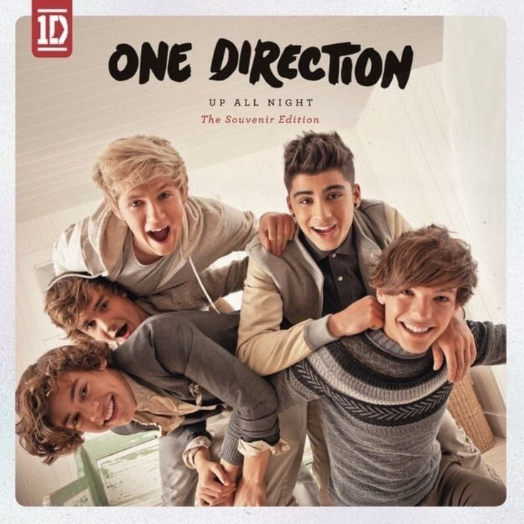
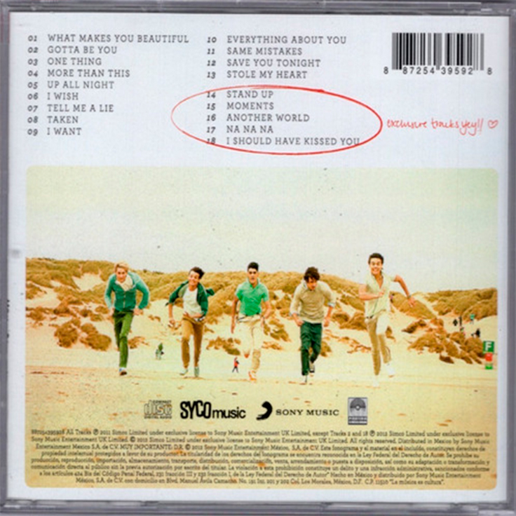
El primer sencillo de One Direction salió el 11 de Septiembre de 2011, llamado "What Makes You Beautiful" y empezó tanto su popularidad como premios Brit, MTV y Teen Choice Awards. Su segunda canción fue "Gotta Be You" ese mismo año y en Marzo de 2012 se lanzó oficialmente su álbum debut: "Up All Night", y salió otro sencillo del disco que es "One Thing".
 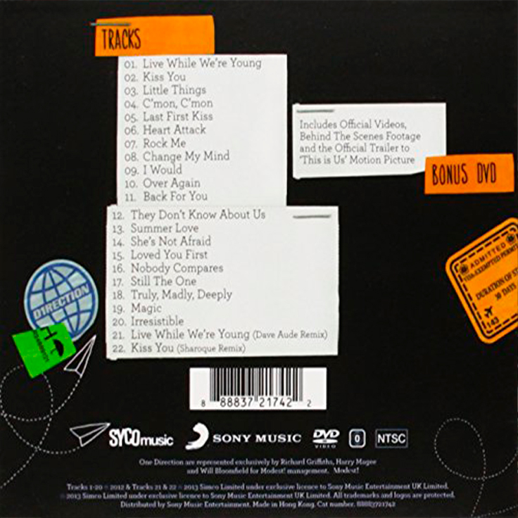
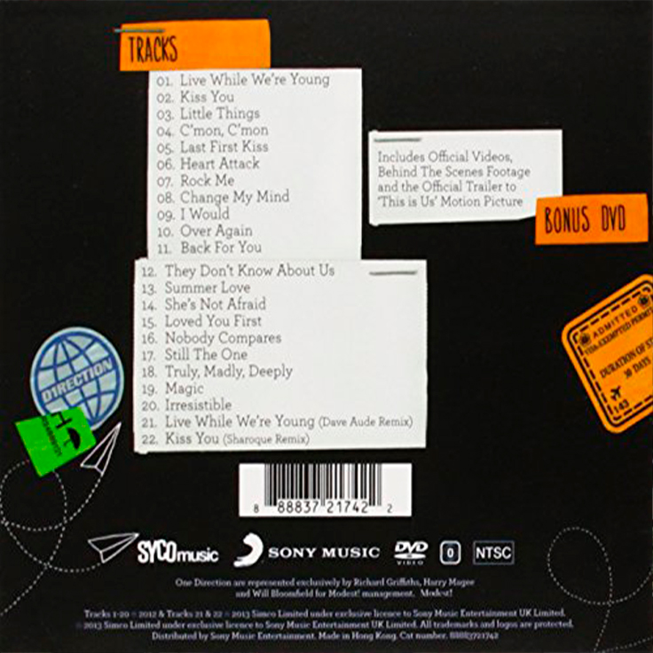
 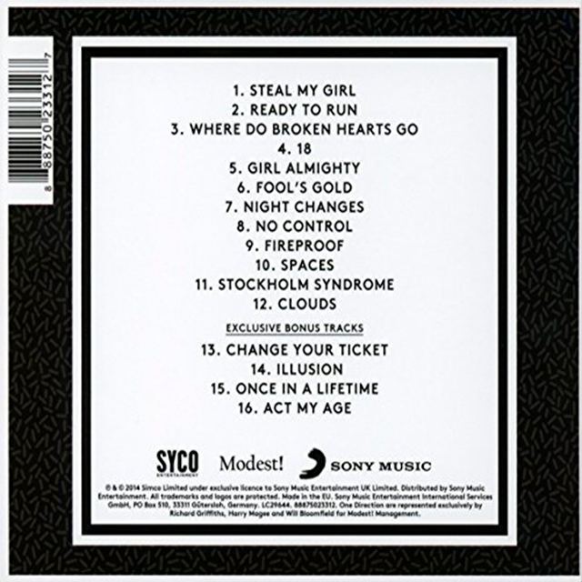
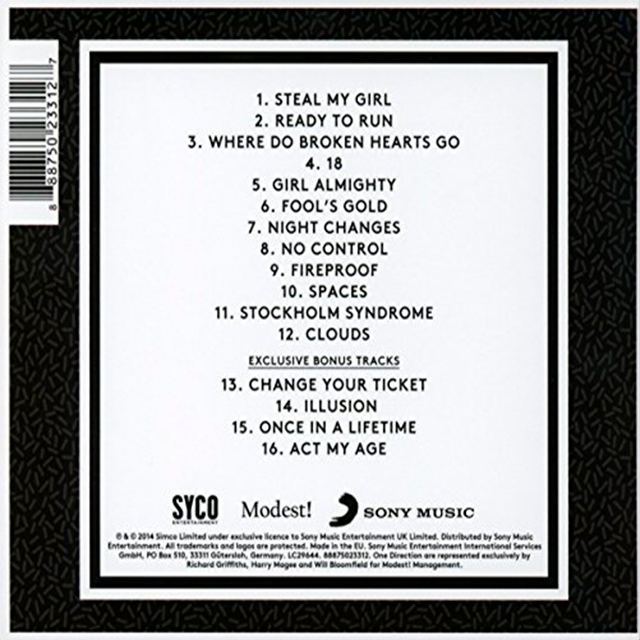
"TAKE ME HOME"
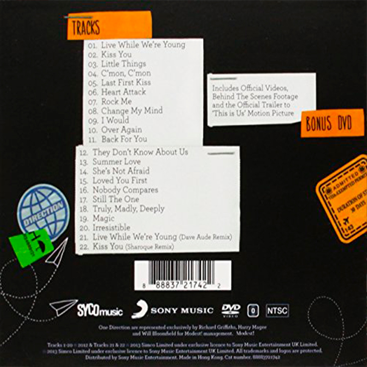
Siguiendo en 2012, por fines de Septiembre se estrenó "Live While We're Young",primera canción el segundo disco. Continuando con sencillos como "Little Things" en Octubre y "Kiss You" en Noviembre, el álbum "Take Me Home" finalmente fue lanzado el 12 del mismo mes.
"MIDNIGHT MEMORIES"
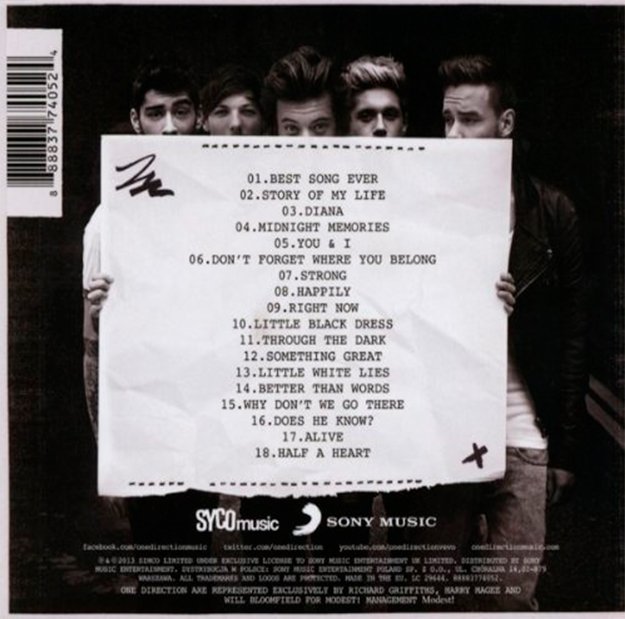
Arrancando en Febrero de 2013, One Direction interpreta "One Way or Another (Teenage Kicks)" siendo un mashup de "One Way or Another" de Blondie y "Teenage Kicks" de The Undertones. La canción fue realizada con el objetivo de recaudar fondos para ayudar a la organización Comic Relief. Este tercer álbum comienza con un primer sencillo "Best Song Ever" en Julio, sigue en Octubre con "Story of My Life" y el 25 de Noviembre se estrena el disco completo de "Midnight Memories". En Marzo de 2014, se lanzó el videoclip con el mismo nombre del álbum y por mayo se estrenó "You & I".
"FOUR"
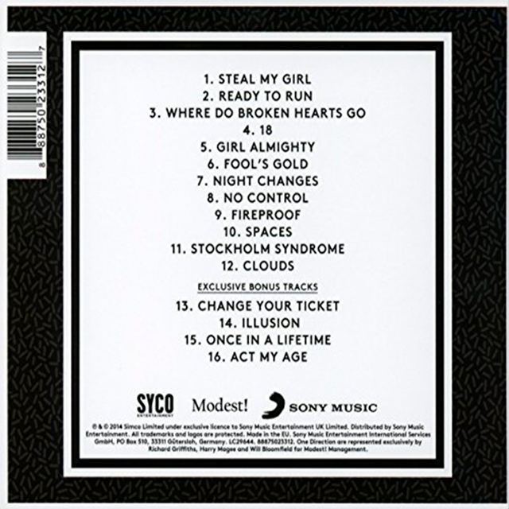
Por abril del año 2014, se confirmó el cuarto álbum de One Direction. Ese mismo año, a finales de octubre, se estrenó el primer sencillo: "Steal My Girl". La segunda canción "Night Changes" salió el 14 de Noviembre y, tres días después, se lanzó el álbum llamado "Four" (Siendo el último disco donde está Zayn Malik como integrante).
 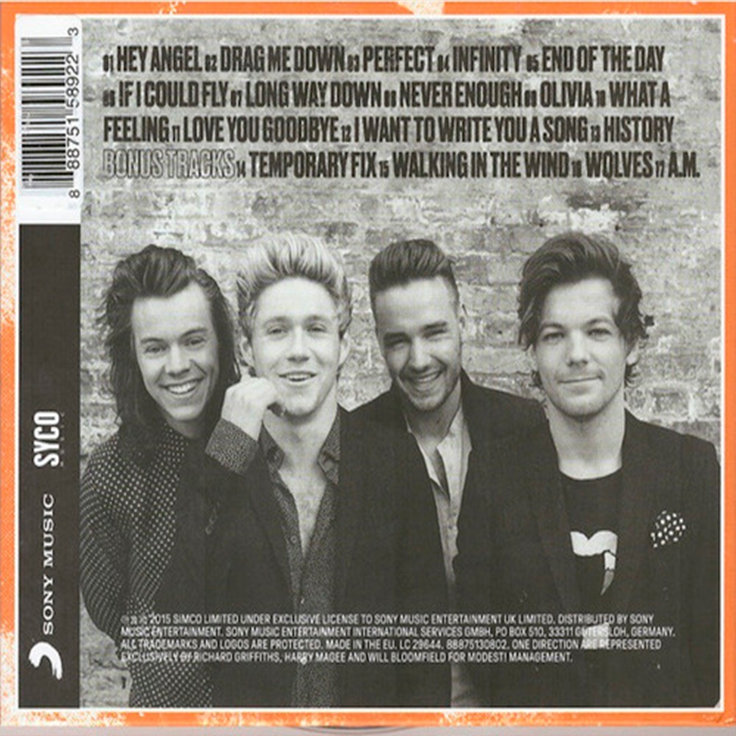
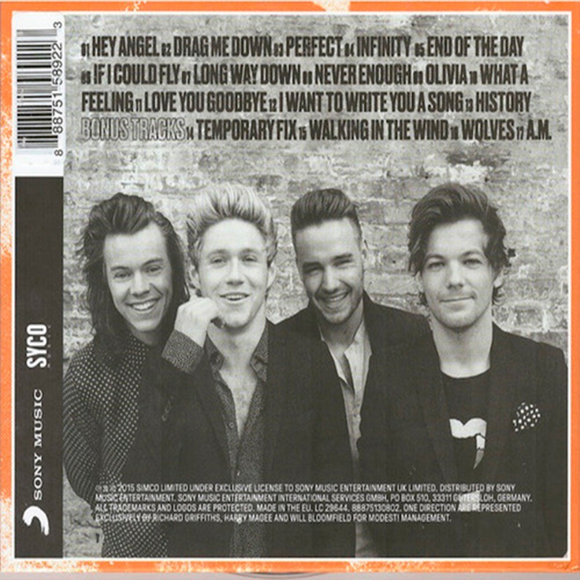
"MADE IN THE AM"
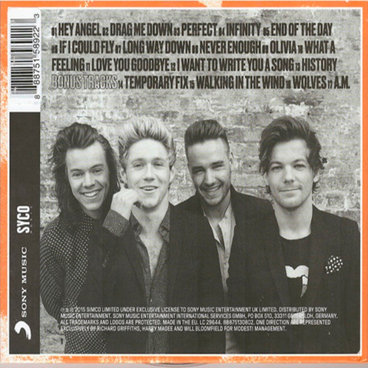
Finalizando en 2015, a fines de Julio se estrenó "Drag Me Down" donde en el videoclip se ve a la banda en el Centro Espacial Johnson de la NASA. Continuaron con su segundo sencillo del quinto álbum "Perfect" en Octubre y el 13 de Noviembre se lanzó su último disco "Made in the A.M.". Y para cerrar esta etapa, se estrenó el videoclip de "History" en Enero de 2016 siendo el último sencillo de One Direction.